全国から妖怪が集まる関東最大規模の妖怪行列「東京百鬼夜行」。
この日高円寺では黄泉の国への扉が開き、魑魅魍魎たちが跳梁跋扈する。
カフェでくつろぐ妖怪、食べ歩きする妖怪、定食を食べる妖怪。
どこにいっても妖怪まみれ！
今回も高円寺の大規模イベントである「高円寺フェス」と同日開催。
街全体がお祭りで賑わう日程での開催だ。
妖怪の舞台である高円寺ルック商店街全体は今年も妖怪大歓迎。
お店や街の住民と仲良くお話して楽しむのもいい
（もちろん驚かせるのも忘れずに）。
高円寺を妖怪で埋め尽くそう！
参加費はいずれも1名あたり・税込です。事前申込制です。
参加の前に妖怪変化規定と妖怪参加者向けFAQをご確認ください。
東京百鬼夜行は、どなたでも無料でご覧いただけます。
申込は不要です。
撮影は高円寺フェスの開催エリア全域でOKです。投稿の際はプライバシーにご配慮のうえ、「#東京百鬼夜行」「#高円寺ルック商店街」「#高円寺フェス」をつけていただけると嬉しいです。
見ているだけでは物足りなくなったら――
妖怪として参加する
東京百鬼夜行を彩る黄泉最強の十妖。
その姿をみたものは・・・もう。
東京百鬼夜行を盛り上げる、最強・最恐な妖怪たちの集まり。
当日の撮影は、創作撮影集団「とらいぽっず」の3名が公式カメラマンとして担当します。撮影をご希望の方は、下記フォームからお申し込みください。
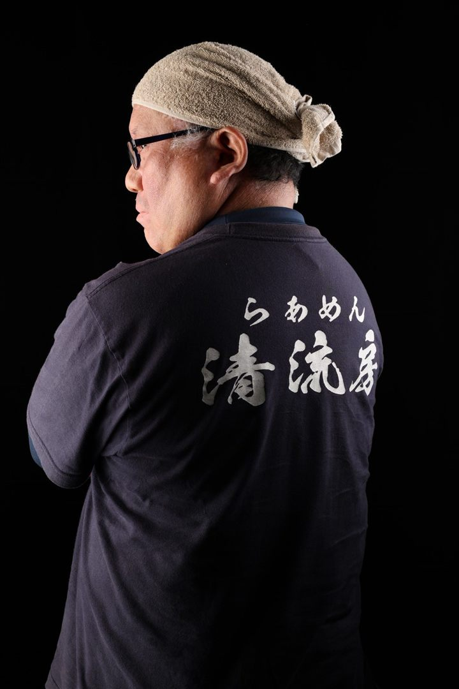
撮影場所・受付：地図を見る📍
これまでの東京百鬼夜行より。
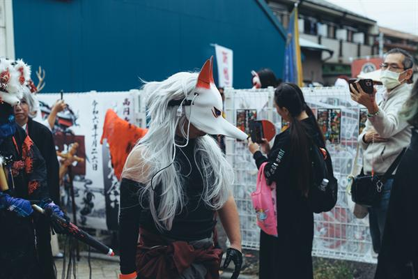
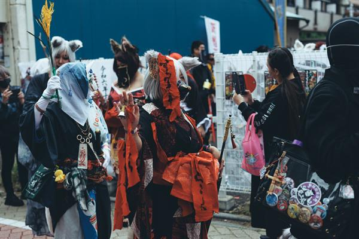
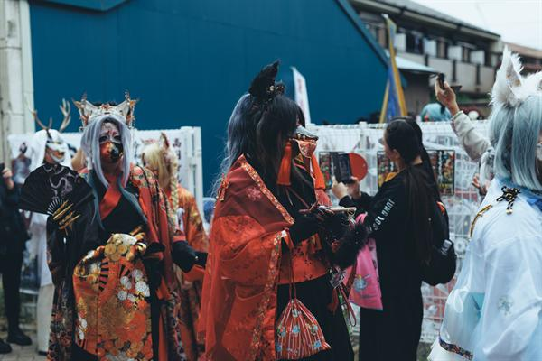
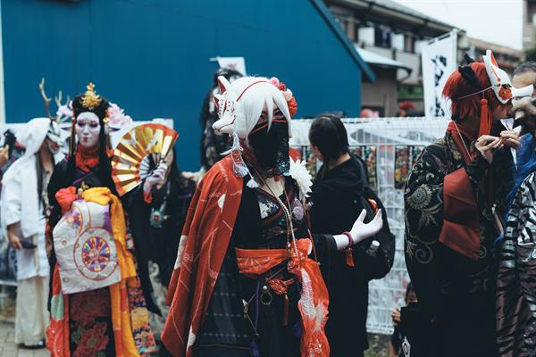
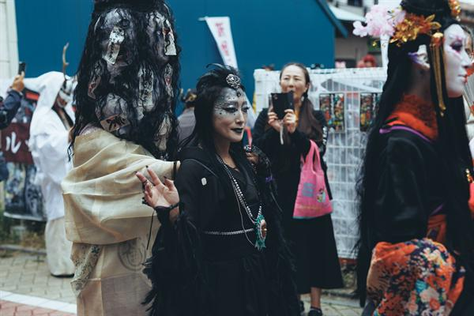
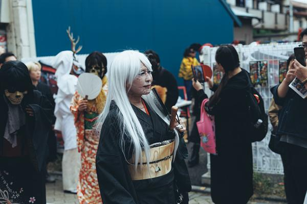
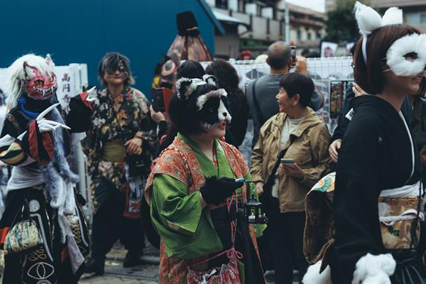
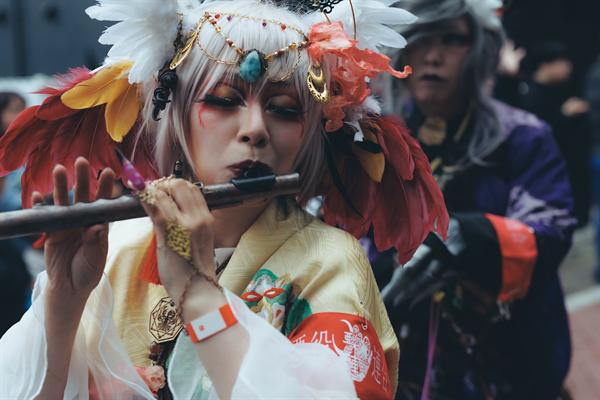
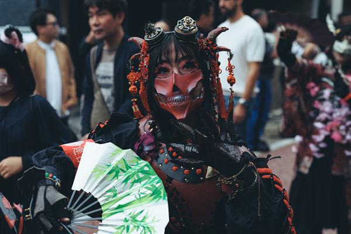
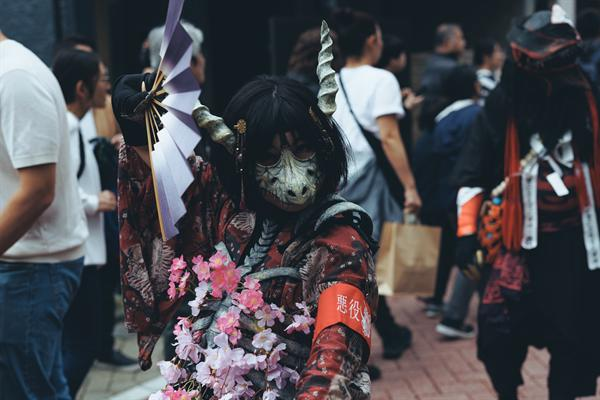
公式カメラ 撮影：創作撮影集団とらいぽっず 顎門
妖怪として参加される方にお守りいただく規定です。